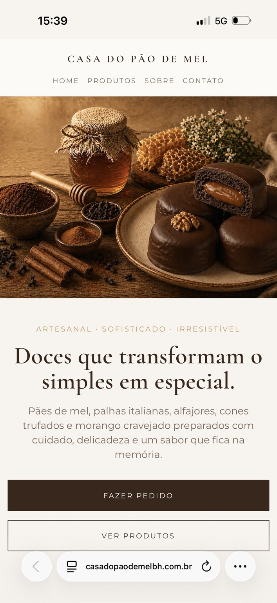

Vantagens para você
Landing Page
Uma solução que vai direto ao ponto, ideal para iniciantes em qualquer negócio. Permite ao cliente entrar em contato direto para orçamentos, agendamentos e pedidos.
Landing Page
Página estratégica para divulgar um serviço, apresentar uma oferta e incentivar novos contatos.
- Foco em uma oferta
- Contato direto
- Ideal para campanhas